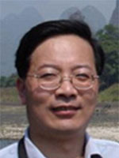
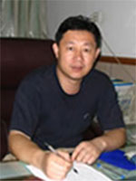
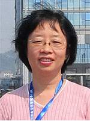

陈六平
教授
个人介绍：男，1962年生，物理化学教授，博士生导师。1984年毕业于同济大学材料科学与工程系（五年制本科），获工学学士学位；1987年毕业于华东工学院（现为南京理工大学）化学工程系，物理化学专业，获工学硕士学位；1990年7月毕业于浙江大学化学系，物理化学专业，获理学博士学位。
学科专业：物理化学
教学工作：课程负责人，课程建设，指导实验。
吕树申
教授
个人介绍：男，1968年生，教授，博士生导师。学士（1990），西安交通大学；硕士（1993），西安交通大学；博士（1997），华南理工大学；博士后（1998-2000），日本筑波大学。
学科专业：化学工程
教学工作：课程建设，指导实验。

赵存元
教授
个人介绍：男，1962年生，教授，博士生导师。1997年11月毕业于南京大学配位化学研究所，理论无机化学专业，获理学博士学位。1987年7月毕业于西北师范大学化学化工学院，物理化学专业，获理学硕士学位。1984年7月毕业于西北师范大学化学化工学院，获理学学士学位。
学科专业：物理化学
教学工作：课程建设，指导实验。
 谢天尧
副教授
谢天尧
副教授

童叶翔
教授
个人介绍：男，1963年生，教授，博士生导师。1981.9-1985.7，中山大学化学系化学专业获学士学位；1985.9-1988.7，中山大学化学系物理化学专业获硕士学位；1996.9-1999.12，中山大学化学院有机化学专业获博士学位。
学科专业：物理化学
教学工作：课程建设，指导实验。
 杨洋溢
副教授
杨洋溢
副教授

杨立群
副教授
个人介绍：女，1969年生，副教授，硕士生导师。1987.9-1994.6，武汉大学化学系高分子化学与物理专业学习, 获理学学士、硕士学位，导师：张俐娜院士；1994.9-1997.6，中山大学高分子研究所高分子化学与物理专业学习,
获理学博士学位，导师：李卓美教授；2000.3-2004.3，日本国家产业技术综合研究所，日本学术振兴会(JSPS)博士后和AIST博士后。
学科专业：高分子化学与物理
教学工作：课程建设，指导实验。
 王小妹
副教授
王小妹
副教授